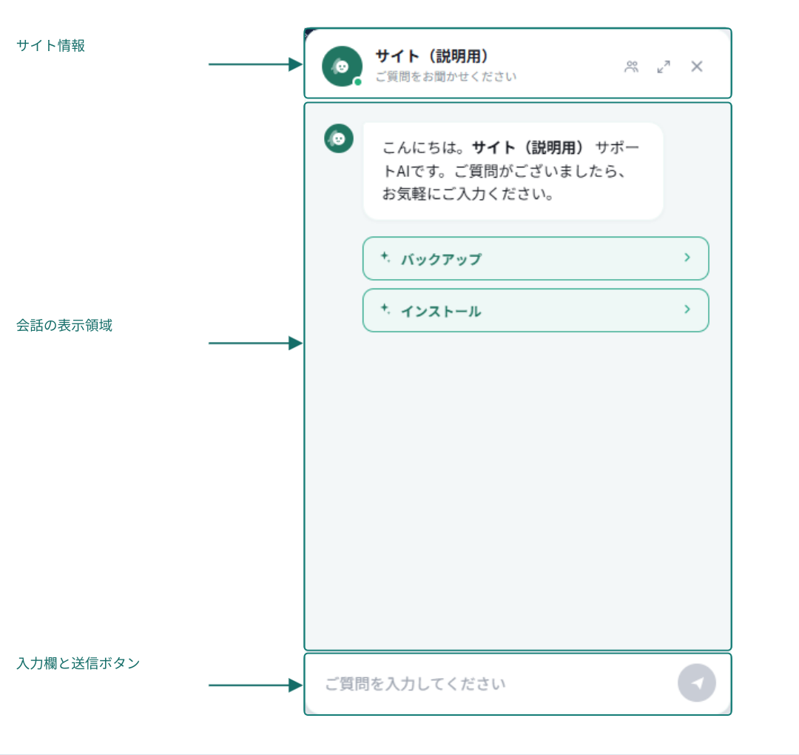
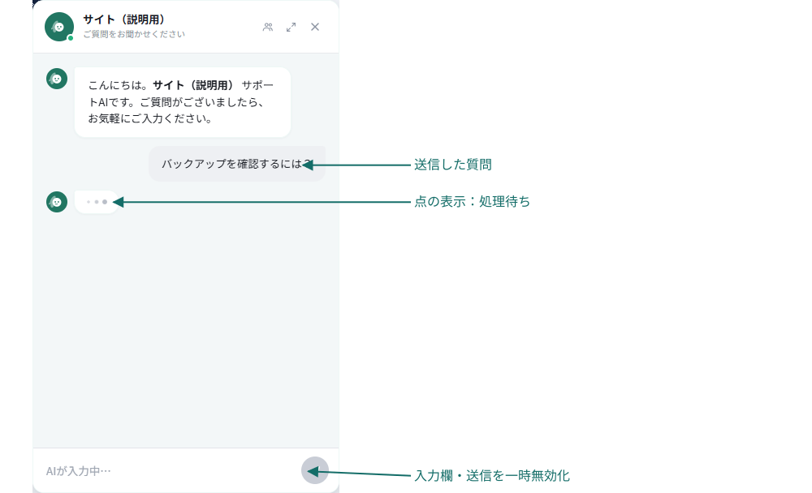
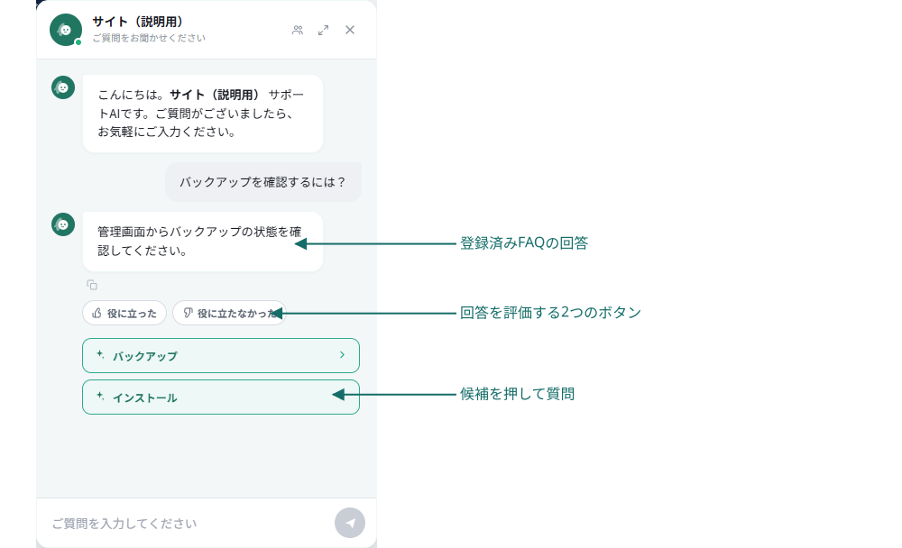
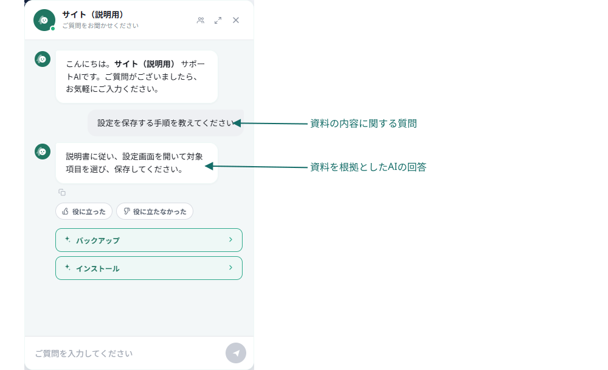
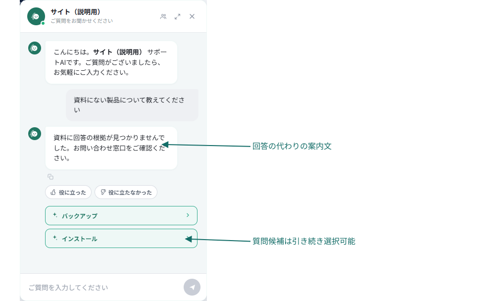

チャットを開く
チャットアイコンを押す → 挨拶、質問候補、入力欄を表示。

質問を送信
質問を入力 → Enter／送信ボタン → 送信文を表示 → AIが入力中… → 回答を待つ。

FAQから回答
適切なFAQを取得 → 保存済みの回答とFAQ画像（ある場合）を質問の下に表示。

1件のFAQに直接一致 → その回答を返す。FAQの選択が必要 → AIがFAQを選ぶ。回答文は書き直さない。
資料を使ってAIが回答
適切なFAQがない → 承認済み資料の関連文を検索 → Ollamaが回答を作成 → チャットに表示。

情報が不足する場合
情報不足 → 質問の補足／問い合わせを案内 → リンクから問い合わせ先を開く。
